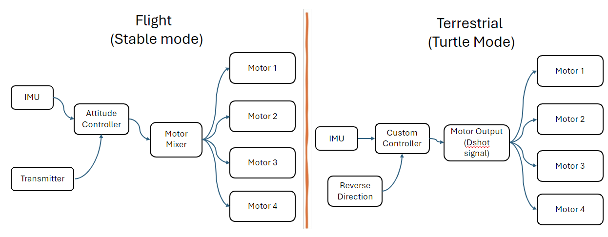
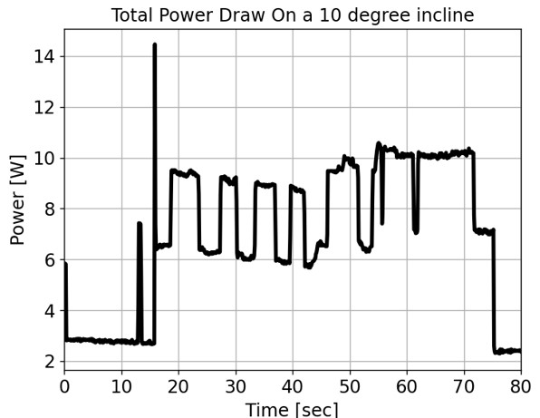

Multi Modal Robotic Traversal of Remote and Rugged Terrain
Brief Overview
An Interdisciplinary team of 2 ME’s and 1 EE developed a multi-modal, remote-controlled surveillance drone named Tipsy to traverse chaotic and rugged environments. While being capable of both flying and driving, Tipsy can also combine the two by using its reversible propellers to provide downward force and increase stability while driving on steep inclines . Since driving is more cost and energy efficient than a sustained flight, a multimodal traversal allows the robot to extend its battery life while being robust.
1. Mechanical Assembly
Tipsy’s final design is an RC crawler with FPV quadcopter components mounted on top. These sub-assemblies are operated independently with an RC car transmitter and an FPV joystick controller respectively. The driving control scheme (Turtle mode) automatically spins the propellers to create traction against the floor such that only the crawler is operated. This is discussed in later sections.
The suspensions on each wheel provide stability as Tipsy drives over rubble as the main body is isolated from the wheels. The stiffness of the suspensions is important to consider as the generated downforce can cause the suspensions to bottom out if it exceeds the maximum spring force of the suspensions at full compression. Stiffer springs were added to the RC crawler such that this didn’t occur during the ramp climbing test.
2. Firmware Implementation and Integration
ArduPilot is a trusted, versatile, and open source autopilot system supporting many vehicle types: multi-copters, traditional helicopters, fixed wing aircraft, boats, submarines, rovers and more. For Tipsy, ArduCopter, quad subbranch of ArduPilot is used, Written in C++, the flight software provides a base architecture to control regular drones and also allows integration of custom firmware such as: custom controllers, custom sensors, and custom flight mode operations.
ince Tipsy is not designed to be a conventional drone, custom firmware is written and integrated to allow it to fly and drive. The two flight modes developed are “Stabilize” and “Turtle” for flying and driving respectively. The control architecture of both modes is shown below. When in Stabilize mode, Tipsy works like a regular quadcopter by having the motors spin in the conventional orientation to provide upwards thrust. In this flight mode, Tipsy’s altitude is manually controlled while the attitude control is done by the Autopilot. The attitude is first transformed into target angles or angular velocity. More specifically, the pitch and roll sticks on the transmitter sets the target angles respectively, so that if those sticks are set to center the vehicle automatically levels itself. The yaw stick sets the target angular velocity instead, such that if the stick is set to center, target angular velocity becomes zero and the vehicle maintains its heading. Then, these target measures are fed into the PID rate controller, which calculates the angular rates for attitude control. Accordingly, the thrust requested by the user is added with that from the Autopilot and the motor mixer sends the corresponding commands to individual motors.
Turtle mode, on the other hand, allows the propellers to be controlled autonomously and the user controls the car as shown in . Opposite to stabilize, this mode reverses the direction of every motor to provide downwards thrust. DShot communication protocol is used for the Electronic Speed Controller because of its ability to reverse the direction of motors. Moreover, the autopilot from stabilize mode is replaced by a custom controller which determines the motor output based on the given pitch angle using a proportional controller.

3. Ramp Test
After the integration of the drive and fly assemblies, Tipsy’s attitude control done by the autopilot is tested in the gimbal. Since the goal of the test is not lifting the robot off the gimbal, minimal throttle is given to allow the robot to perform roll and pitch as per the command. The test is conducted for about 3 minutes and the power draw and attitude data is collected. Tipsy consumed about 100 Watts, as shown below just to provide enough thrust for tracking the roll and input commands. Accordingly, enough throttle is given for the robot to lift off if not connected to the gimbal. Towards the end of the test, more throttle is given to see the effects of throttle provided to the tracking of roll and pitch commands.
The final tracking results of the robot for input roll and pitch commands are shown below. From first glance, the results show a lot of error between the input-output mapping. This is determined to be the result of the self-stabilizing nature of the gimbal’s roll axis. Since the robot’s center of mass is lower than the rod - axis of rotation- it is connected to, the robot has a tendency to bring the roll angle to 0. Accordingly, as the attitude controller tries to increase the roll, it is met with a restraining force of the gimbal. This can be seen in the graph where the robot tries to match the peak of the input command but is not able to maintain the commanded roll angle. This also makes the tracking slower as seen in the last couple of seconds where the robot is tested for its agility by giving quick roll and pitch commands.
Another reason for the error in the input-output mapping is the added inertia of the gimbal. The bearings, 3D printed pieces and doubly stacked woods add a lot more resistance to the rotation than the assembly by itself. Accordingly, the gains are not that aggressive in providing the required thrust as they should be for the assembly by itself. Since the effect of these effects is not quantifiable, the tuned gains are not changed.
As said, the custom controller used for providing downwards force increases the motor output as the pitch angle increases to ensure traction control. To determine the actual downwards force generated by Tipsy, the ramp test is conducted and the results are shown below. The required downwards force is determined using the point particle dynamics and imposing the condition of 0 acceleration down the ramp. The friction of coefficient is chosen to be 0.7 which is for hard rubber on dry wood and the mass of the vehicle is 1.045 kg. Since the normal force provided by the perpendicular (to the plank) component of the weight is enough for smaller angles, the theoretical downwards force requirement for the same angles is 0. As seen, the downwards force provided by the robot is enough for slopes up to 40 \(/deg\).
To conclude testing, the final ramp test is conducted where the robot is driven up the ramp with and without propellers. Due to the limited torque capability of the drive motors, tests up to 10 degree incline angles are conducted. Regardless, the wheels often spin when propellers are turned off. However, after turning on turtle mode, the robot is able to drive up the incline while only consuming a total of 14 W (from both systems: drive and fly). The actual data collected is shown below. This proves the power efficiency of the multi-modality.

Later test are conducted where high torque motors are used and Tipsy is able to replicate similar results for an incline of 30 degrees as shown below. At the first peak (t = 10 sec), propellers are turned off and the robot’s front wheels keep slipping and it fail to maintain the 30-degree incline. However with propellers turned on, at later peaks, the robot has no difficulty in climbing the incline.
Tipsy demonstrates many benefits over prior literature on UGAV’s as it is more versatile, cost-effective, and power-efficient. The simple ramp climbing test demonstrates the benefits of re-purposing flight actuators for additional stability during terrestrial locomotion. Further explorations may use the propellers to perform more sophisticated maneuvers such as a controlled wheelie (inverted pendulum type control), climbing up vertical structures by adding wall-climbing like Vertigo, or ensuring Tipsy doesn’t tip over as it drives over rubbly terrain. Tipsy currently relies on a pre-computed P-controller to map pitch angle to downforce. In future, adding linear potentiometers to the suspensions to measure the spring force could allow Tipsy to detect the reaction force against each wheel, giving Tipsy a sense of touch. The acceleration and reaction force data could be used in conjunction to design a traction control scheme that increases the downforce against the wheels if Tipsy detects it is slipping. Additional sensors for life-detection such as temperature sensors, microphones, and carbon dioxide monitors, etc can be added to the I2C channels of the FCU to make it more useful in search-and-rescue scenarios. Another developmental route can be to allow full operator control over Tipsys roll, pitch, and yaw using Ardupilots acro-mode and foot pedals for driving thrust, and steering. Highly trained operators could take advantage of Tipsy’s multi-modal capabilities to traverse extremely challenging environments. Overall, Tipsy shows great promise for a multitude of applications and only further research will unearth its full potential.